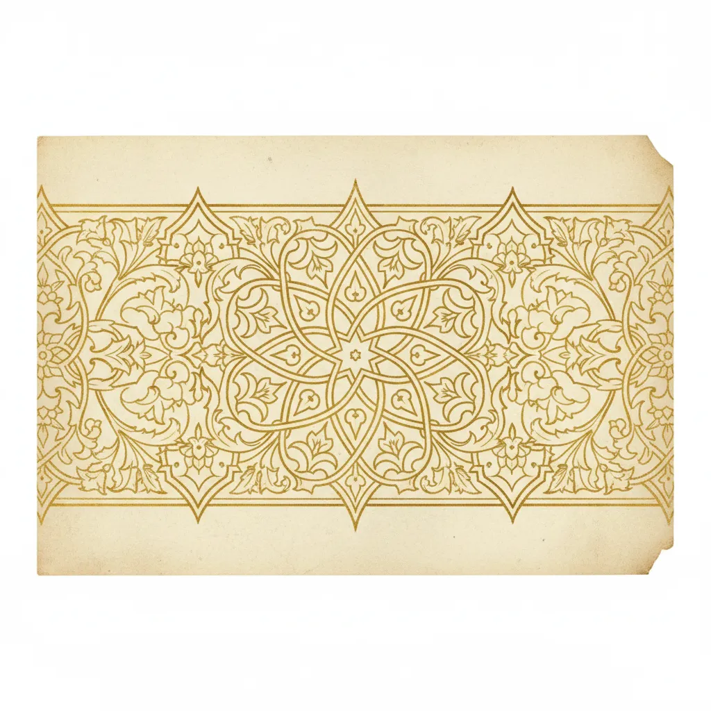

Malam Rabu, tahun 11 Hijriyah. Aisyah terbangun oleh suara yang tidak dikenalnya. Thok. Thok. Thok. Suara cangkul menghantam tanah.
Belakangan ia berkata: "Kami tidak tahu penguburan Rasulullah sampai kami mendengar suara cangkul di tengah malam."
Nabi ﷺ telah wafat sejak Senin. Dua hari telah berlalu. Dan baru sekarang — Rabu dini hari — jenazahnya menyentuh tanah.
Kenapa tertunda?
Saqifah: Pertemuan yang Mengubah Segalanya
Al-Thabari (w. 310 H) dalam Tarikh al-Umam wa al-Muluk mencatat apa yang terjadi saat jenazah Nabi masih terbaring di kamar Aisyah, belum dimandikan.
Kaum Anshar berkumpul di Tsaqifah Bani Sa'idah. Agenda mereka: memilih pemimpin dari kalangan sendiri. "Kami yang menolong Rasulullah. Kami yang memberi tempat hijrah. Kamilah yang berhak."
Umar bin al-Khatthab mendengar kabar itu. Ia bergegas menemui Abu Bakr. Bersama Abu Ubaidah, mereka bertiga menuju Tsaqifah.
Yang terjadi selanjutnya adalah perdebatan sengit yang berlangsung berjam-jam. Umar mengancam: "Siapa yang membaiat Sa'd bin Ubadah, akan kupenggal lehernya." Abu Bakr berargumen: "Bangsa Arab tidak akan tunduk kecuali kepada Quraisy." Akhirnya Abu Bakr dibaiat — bukan dengan musyawarah tenang, tapi dalam atmosfer krisis dan tekanan.
Sementara itu, di rumah Aisyah, Ali bin Abi Thalib — sepupu dan menantu Nabi — sedang memandikan jenazah bersama Abbas, Fadhl, Qutsam, Usamah, dan Syuqran. Ali tidak hadir di Saqifah. Ali tidak membaiat Abu Bakr sampai berbulan-bulan kemudian — setelah Fatimah wafat.
Di sinilah benih Syiah ditanam. Bukan di Karbala. Bukan di Shiffin. Di Saqifah. Saat komunitas Islam belum genap 24 jam ditinggal Nabinya — dan sudah berkelahi soal siapa yang berhak memimpin.
"Perpecahan umat Islam lahir saat jenazah Nabinya sendiri belum dikuburkan. Seolah kematian Nabi adalah trauma yang begitu besar sehingga komunitas tidak bisa menunggu."
— Esai ini
Dua Kematian, Dua Penundaan, Satu Pelajaran
Maju 1.400 tahun.
Tehran, Juli 2026. Rakyat Iran menangisi Ali Khamenei. Prosesi enam hari. Jutaan manusia. Bendera hitam.
Kita — yang menonton dari jauh — bertanya: kenapa pemakamannya tertunda 126 hari? Bukankah hadis memerintahkan asri'u bil-janazah — segerakanlah jenazah?
Tapi jarang yang ingat: Nabi sendiri tidak dimakamkan segera. Dua sampai tiga hari — jenazah manusia paling mulia dalam Islam — terbaring belum dikuburkan.
![Timeline perbandingan penundaan pemakaman Nabi Muhammad dan Ali Khamenei](data:image/svg+xml,%3Csvg xmlns='http://www.w3.org/2000/svg' width='620' height='200' viewBox='0 0 620 200'%3E%3Crect fill='%23ffffff' width='620' height='200' rx='6'/%3E%3Cline x1='60' y1='70' x2='560' y2='70' stroke='%23e8e0d5' stroke-width='2'/%3E%3Ccircle cx='100' cy='70' r='8' fill='%238b6914'/%3E%3Ccircle cx='440' cy='70' r='8' fill='%238b6914'/%3E%3Ctext x='100' y='55' text-anchor='middle' fill='%232c2416' font-family='Inter,sans-serif' font-size='13' font-weight='600'%3E11 H / 632 M%3C/text%3E%3Ctext x='100' y='100' text-anchor='middle' fill='%236b5e4a' font-family='Lora,serif' font-size='12'%3ENabi Muhammad ﷺ%3C/text%3E%3Ctext x='100' y='120' text-anchor='middle' fill='%239b8d7a' font-family='Inter,sans-serif' font-size='10'%3ETertunda 2–3 hari%3C/text%3E%3Ctext x='440' y='55' text-anchor='middle' fill='%232c2416' font-family='Inter,sans-serif' font-size='13' font-weight='600'%3E2026 M%3C/text%3E%3Ctext x='440' y='100' text-anchor='middle' fill='%236b5e4a' font-family='Lora,serif' font-size='12'%3EAli Khamenei%3C/text%3E%3Ctext x='440' y='120' text-anchor='middle' fill='%239b8d7a' font-family='Inter,sans-serif' font-size='10'%3ETertunda 126 hari%3C/text%3E%3Ctext x='270' y='155' text-anchor='middle' fill='%236b5e4a' font-family='Inter,sans-serif' font-size='11' font-weight='500'%3ESatu pertanyaan sama: Siapa yang memimpin kami?%3C/text%3E%3Ctext x='270' y='180' text-anchor='middle' fill='%239b8d7a' font-family='Inter,sans-serif' font-size='9'%3E%3C/text%3E%3C/svg%3E)
Dan alasan penundaannya adalah politik. Bukan karena tidak tahu hukum. Bukan karena lalai. Tapi karena komunitas harus menyelesaikan pertanyaan yang lebih besar: siapa yang memimpin kami setelah Nabi? Tanpa menjawab itu, seluruh bangunan Islam bisa runtuh.
Para sahabat mendahulukan stabilitas umat. Dan keputusan itu — apa pun pendapat kita tentang Saqifah — membentuk dunia Islam yang kita kenal sekarang.
Saqifah Tidak Selesai
Yang menarik: perpecahan di Saqifah tidak pernah benar-benar selesai. Ia menjadi akar dari seluruh tradisi Syiah.
Bagi Sunni: Abu Bakr adalah khalifah sah. Bagi Syiah: Ali-lah yang seharusnya memimpin — berdasarkan Ghadir Khumm, berdasarkan kedekatan darah dan wasiat.
Keduanya merujuk ke momen yang sama: hari-hari ketika jenazah Nabi belum dikuburkan. Dan 1.400 tahun kemudian, dua tradisi terbesar Islam masih berpisah — karena apa yang terjadi (atau tidak terjadi) di Madinah, saat Aisyah mendengar suara cangkul di tengah malam.
Ironisnya: Khamenei sendiri adalah produk dari tradisi yang lahir di Saqifah. Wilayat al-Faqih — doktrin bahwa faqih memerintah menggantikan Imam Ghaib — adalah jawaban Syiah atas pertanyaan yang sama: siapa yang berhak memimpin umat saat pemimpin sejati tidak hadir?

Apa yang Bisa Kita Pelajari
Pertama: penundaan penguburan bukan hal asing dalam Islam. Nabi sendiri mengalaminya. Para sahabat — termasuk mereka yang kelak menjadi tokoh paling dihormati Sunni dan Syiah — terlibat dalam perdebatan politik saat jenazah masih terbaring.
Kedua: masalahnya bukan pada durasi. Nabi tertunda 2 hari. Khamenei tertunda 126 hari. Skalanya berbeda, tapi prinsipnya sama: penguburan bisa tertunda jika ada kemaslahatan yang lebih besar. Debatnya adalah: apa maslahat itu? Dan siapa yang menentukannya?
Ketiga — dan ini yang paling mengguncang: perpecahan umat Islam lahir saat jenazah Nabinya sendiri belum dikuburkan. Seolah-olah kematian Nabi adalah trauma yang begitu besar sehingga komunitas tidak bisa menunggu — mereka harus segera menyelesaikan "siapa penggantinya," bahkan sebelum tanah menutupi jasad manusia yang mereka cintai.
Mungkin itu sebabnya Aisyah tidak diberi tahu pemakamannya. Mungkin itu sebabnya Ali membaiat terlambat. Mungkin itu sebabnya Fatimah wafat dalam keadaan marah — menurut riwayat Shahih Bukhari.
Semua dimulai dari Saqifah. Dan Saqifah terjadi saat jenazah masih di atas ranjang.
Tehran hari ini. Madinah dulu.
Dua kota. Dua kematian. Satu pertanyaan yang sama: siapa yang memimpin kami?
Dan 1.400 tahun belum cukup untuk menjawabnya.